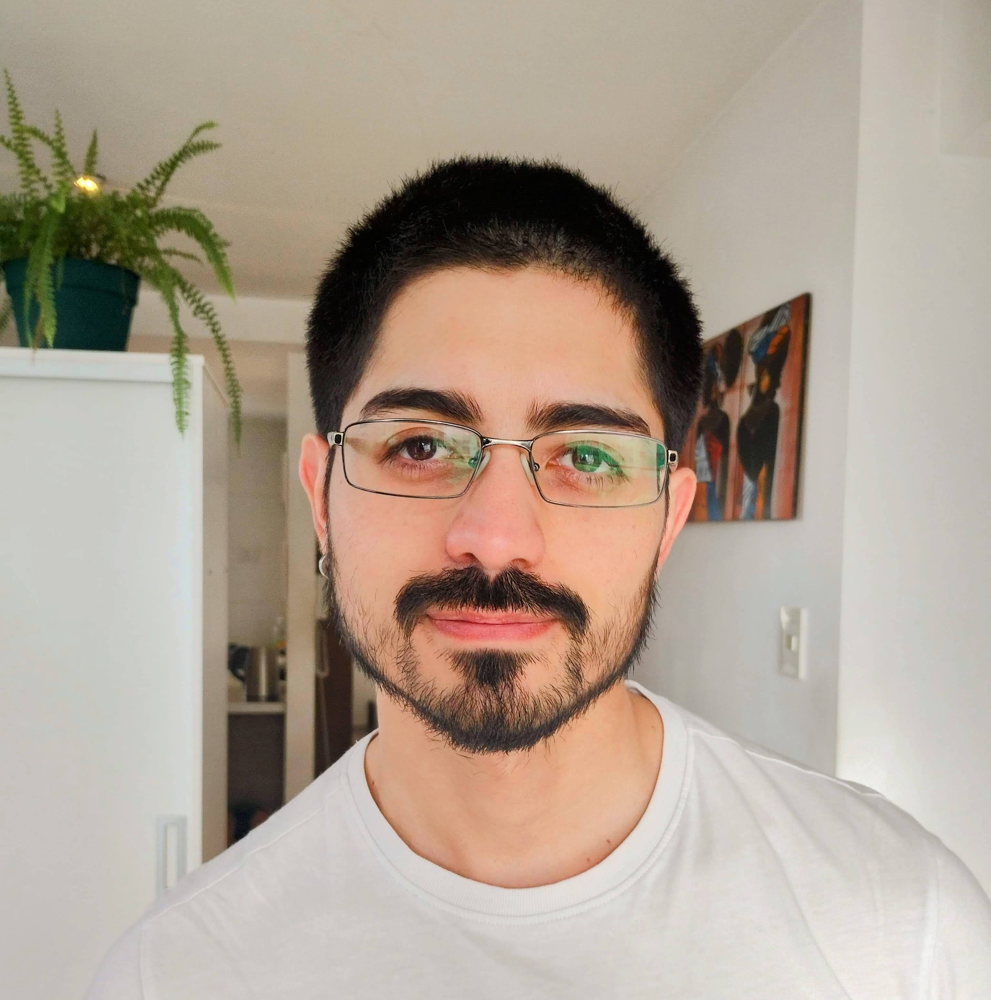

Frontend Developer
Mauricio Pisco
Con alma emprendedora y curioso por naturaleza, busco continuamente nuevas formas de resolver problemas con las herramientas que integro de forma cotidiana, enfocándome en empatizar con el usuario para crear soluciones digitales que le aporten un valor real.
Conocé mi trayectoria